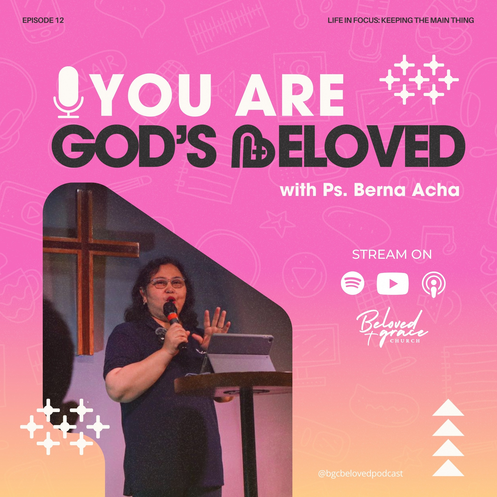
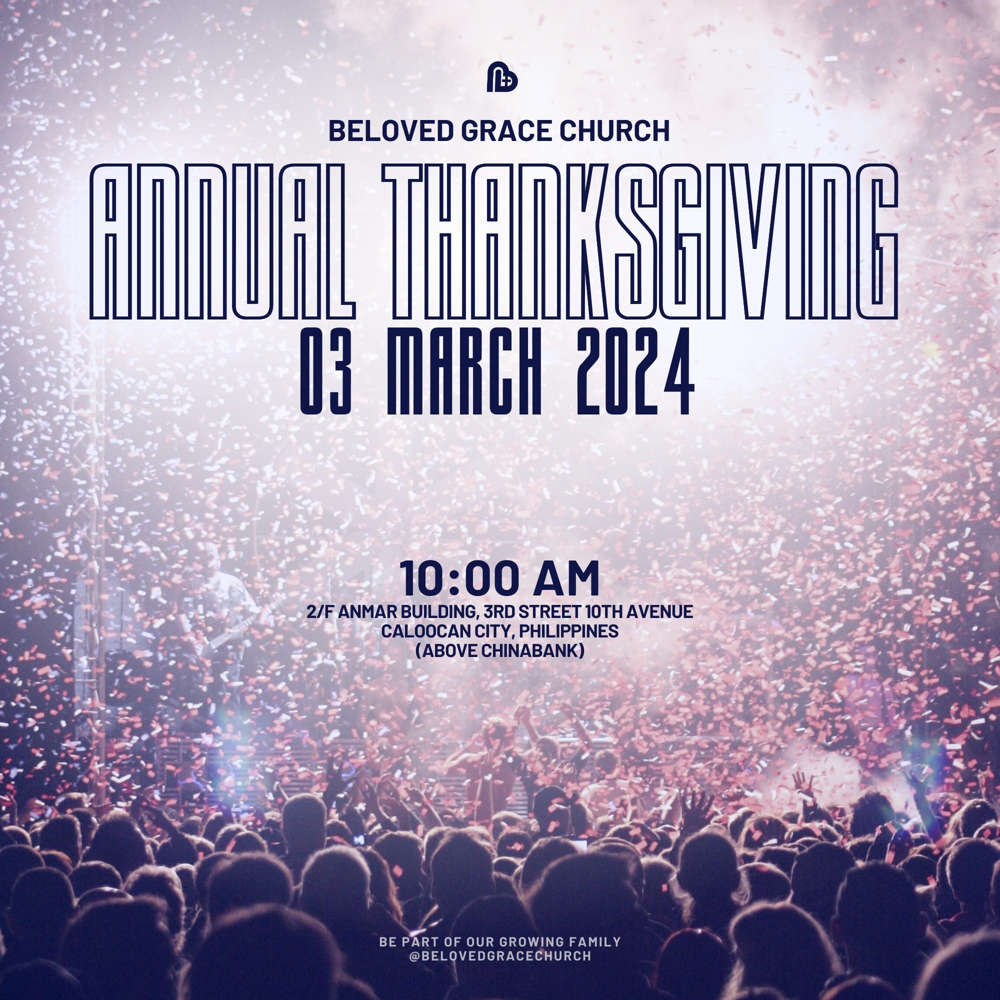
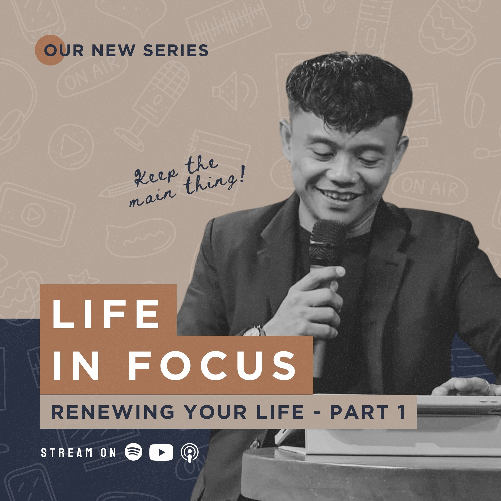
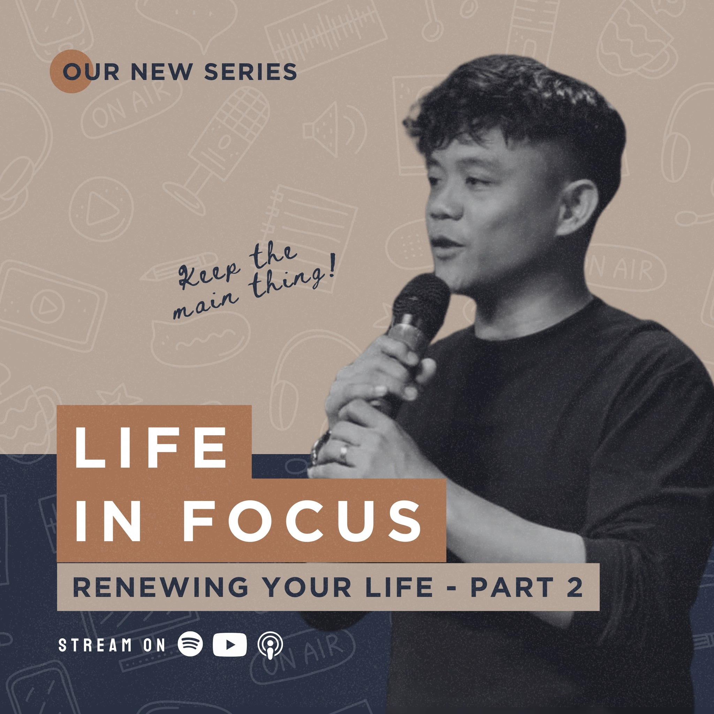
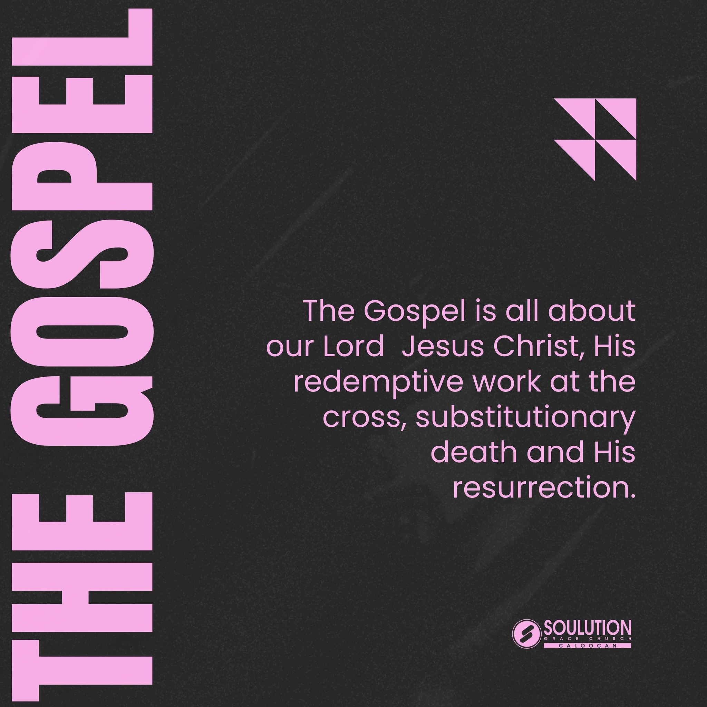
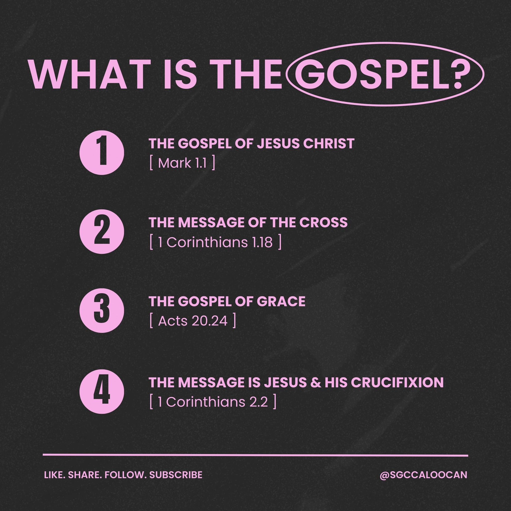
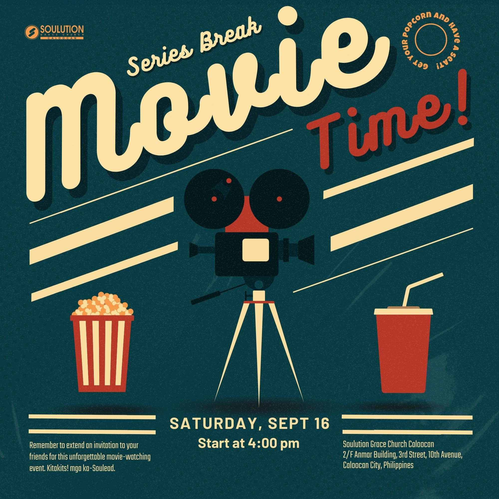
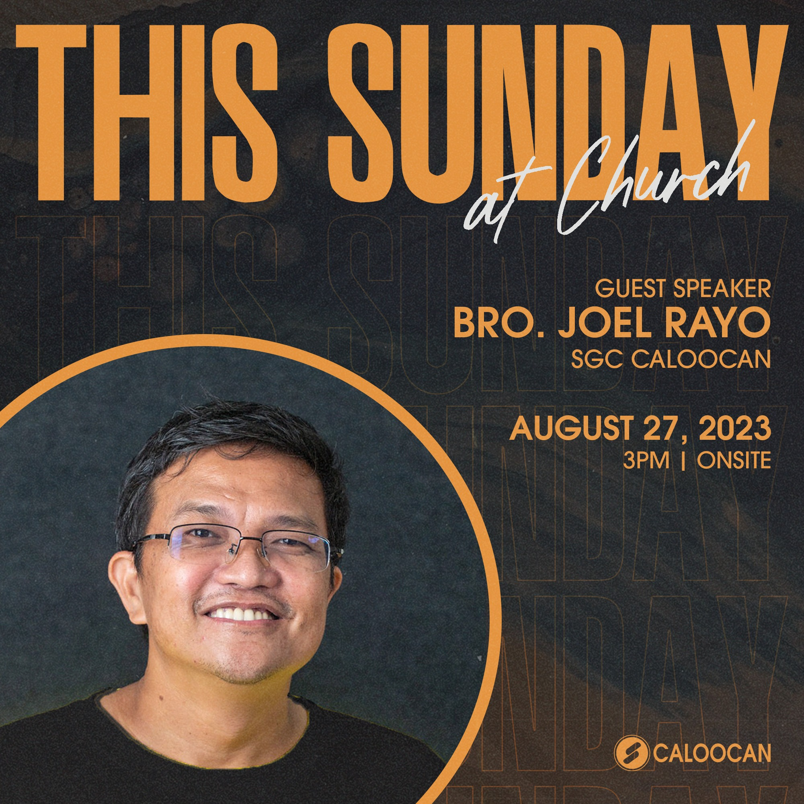
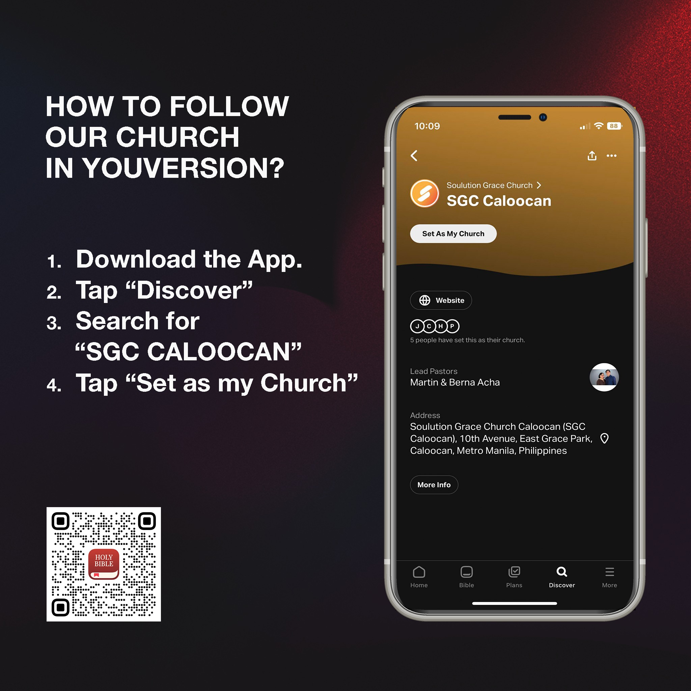

Beloved Grace Church
Activities Page
You are GOD'S Beloved
March 12, 2024
As we gather for our Annual Thanksgiving celebration, we wholeheartedly accept the profound truth of God's love for us. Through Jesus Christ, we are deeply cherished and abundantly blessed. Now, let us move forward with confidence in God's intention for our well-being and success in every aspect of life.
Annual Thanksgiving
March 3,2024
Every year, the beloved Grace Church gathers in grateful celebration for their annual Thanksgiving event. Parishioners from all walks of life come together in the warm embrace of fellowship and gratitude. Amidst the rustic charm of the church's halls, adorned with autumnal decorations, families and friends share stories of blessings and give thanks for the abundance in their lives.
Life in Focus
March 20, 2024
In the first installment of "Life in Focus," we delve into the profound journey of self-discovery and mindfulness. As we navigate the complexities of modern existence, this series aims to illuminate the path towards a more purposeful and fulfilling life. Through introspection, mindfulness practices, and the cultivation of meaningful connections, we strive to find clarity amidst the chaos. Join us on this transformative expedition as we embark on a quest to live intentionally and embrace the beauty of each moment.
Life in Focus 2
March 28, 2024
In the first installment of "Life in Focus," we delve into the profound journey of self-discovery and mindfulness. As we navigate the complexities of modern existence, this series aims to illuminate the path towards a more purposeful and fulfilling life. Through introspection, mindfulness practices, and the cultivation of meaningful connections, we strive to find clarity amidst the chaos. Join us on this transformative expedition as we embark on a quest to live intentionally and embrace the beauty of each moment.
The Gosipel
March 31, 2024
"The Gospel" refers to the teachings and message of Jesus Christ as recorded in the New Testament of the Bible. It encompasses the central themes of love, forgiveness, salvation, and the Kingdom of God. The word "gospel" itself means "good news," reflecting the belief that Jesus' life, death, and resurrection offer redemption and hope to humanity
What is Gospel?
April 6, 2024
Christians regard the four canonical Gospels—Matthew, Mark, Luke, and John—as the primary sources of Jesus' teachings and the foundation of their faith. The Gospel serves as a guide for believers, encouraging them to live lives of compassion, service, and devotion to God and others.
Movie Break Time
March 28, 2024
Join us for a heartwarming movie time at Beloved Grace Church! Gather with friends and family in the cozy fellowship hall as we screen a beloved film that inspires faith and uplifts spirits. With popcorn in hand and laughter in the air, come experience the joy of community and the magic of cinema. It's an evening of wholesome entertainment and cherished memories you won't want to miss. See you there!
Resurrection Sunday
August 27, 2023
Beloved Grace Church is honored to welcome a distinguished guest speaker to our congregation. With profound wisdom and heartfelt conviction, our guest speaker will share insights that inspire and uplift. Join us as we gather in eager anticipation, ready to be enlightened and encouraged by their message of faith, hope, and love. Don't miss this special opportunity to be inspired and transformed by the words of our esteemed guest speaker at Beloved Grace Church.
Launching of SGC in App
July 10 , 2024
We are thrilled to announce the launch of Beloved Grace Church on the Holy Bible app! Now, our community can come together in prayer, reflection, and study anytime, anywhere. With easy access to sermons, devotionals, and interactive features, this digital platform extends the reach of our ministry beyond the walls of our physical church. Join us as we embark on this exciting journey of faith, embracing technology to deepen our connection to God and each other.